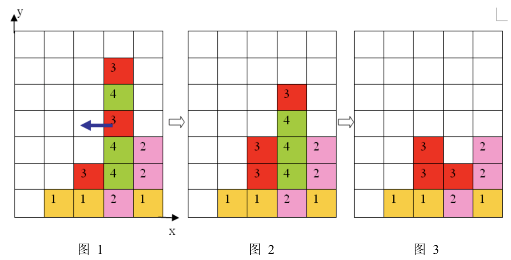
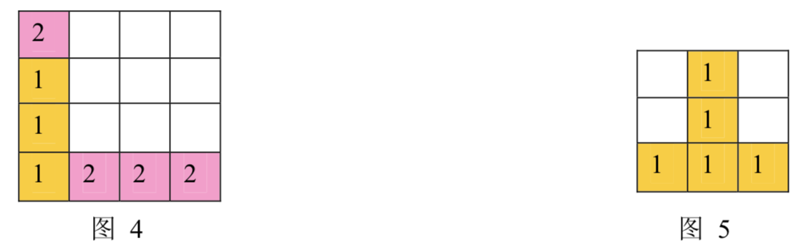

Mayan puzzle 是最近流行起来的一个游戏。游戏界面是一个 $7$ 行 $5$ 列的棋盘，上面堆放着一些方块，方块不能悬空堆放，即方块必须放在最下面一行，或者放在其他方块之上。游戏通关是指在规定的步数内消除所有的方块，消除方块的规则如下：
1、 每步移动可以且仅可以沿横向（即向左或向右）拖动某一方块一格：当拖动这一方块时，如果拖动后到达的位置（以下称目标位置）也有方块，那么这两个方块将交换位置（参见输入输出样例说明中的图 6 到图 7）；如果目标位置上没有方块，那么被拖动的方块将从原来的竖列中抽出，并从目标位置上掉落（直到不悬空，参见下面图 1 和图 2）；

2、 任一时刻，如果在一横行或者竖列上有连续三个或者三个以上相同颜色的方块，则它们将立即被消除（参见图 1 到图 3）。
注意：
- 如果同时有多组方块满足消除条件，几组方块会同时被消除（例如下面图 4，三个颜色为 $1$ 的方块和三个颜色为 $2$ 的方块会同时被消除，最后剩下一个颜色为 $2$ 的方块）。
- 当出现行和列都满足消除条件且行列共享某个方块时，行和列上满足消除条件的所有方块会被同时消除（例如下面图 5 所示的情形，$5$ 个方块会同时被消除）。

3、 方块消除之后，消除位置之上的方块将掉落，掉落后可能会引起新的方块消除。注意：掉落的过程中将不会有方块的消除。
上面图 1 到图 3 给出了在棋盘上移动一块方块之后棋盘的变化。棋盘的左下角方块的坐标为 $(0, 0)$，将位于 $(3, 3)$ 的方块向左移动之后，游戏界面从图 1 变成图 2 所示的状态，此时在一竖列上有连续三块颜色为 $4$ 的方块，满足消除条件，消除连续 $3$ 块颜色为 $4$ 的方块后，上方的颜色为 $3$ 的方块掉落，形成图 3 所示的局面。
 Comet OJ
Comet OJ